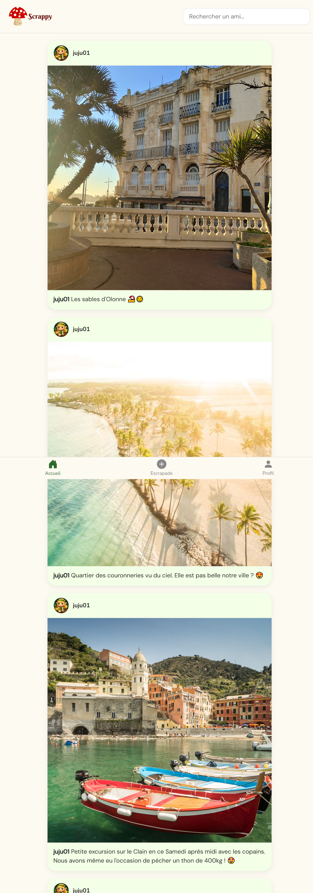
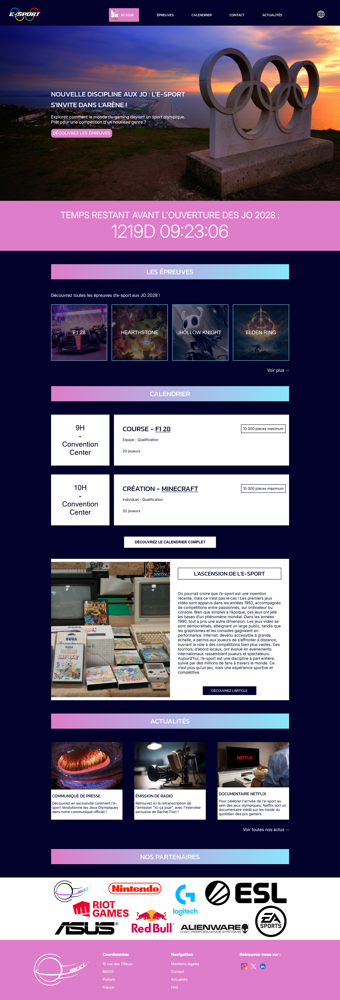
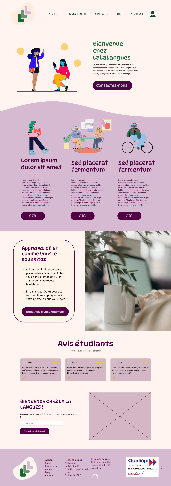
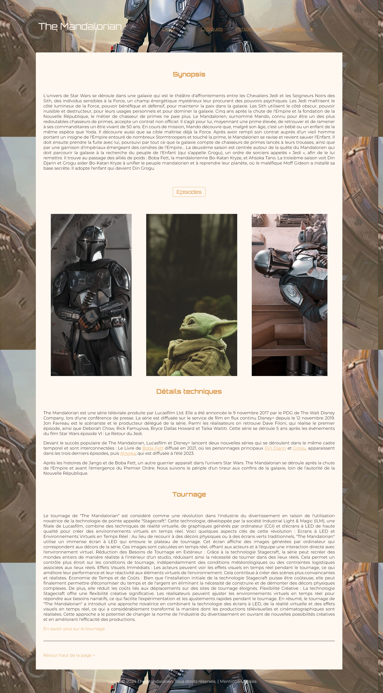
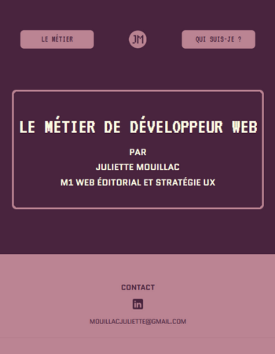
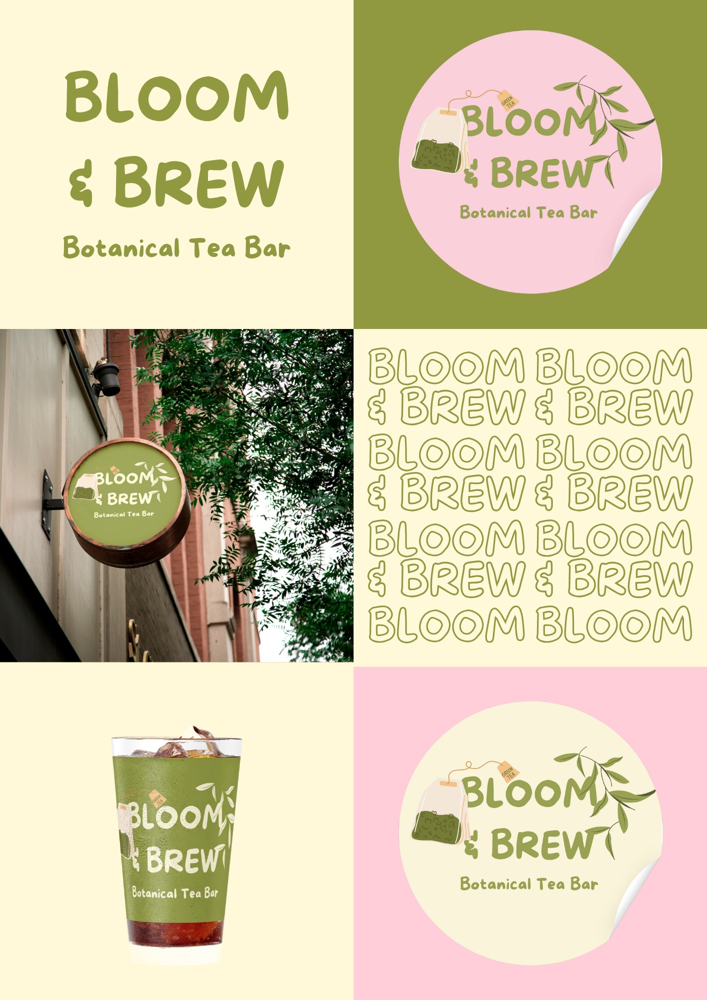
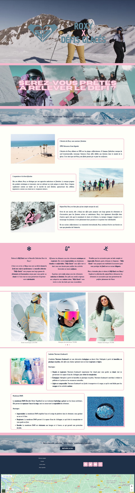
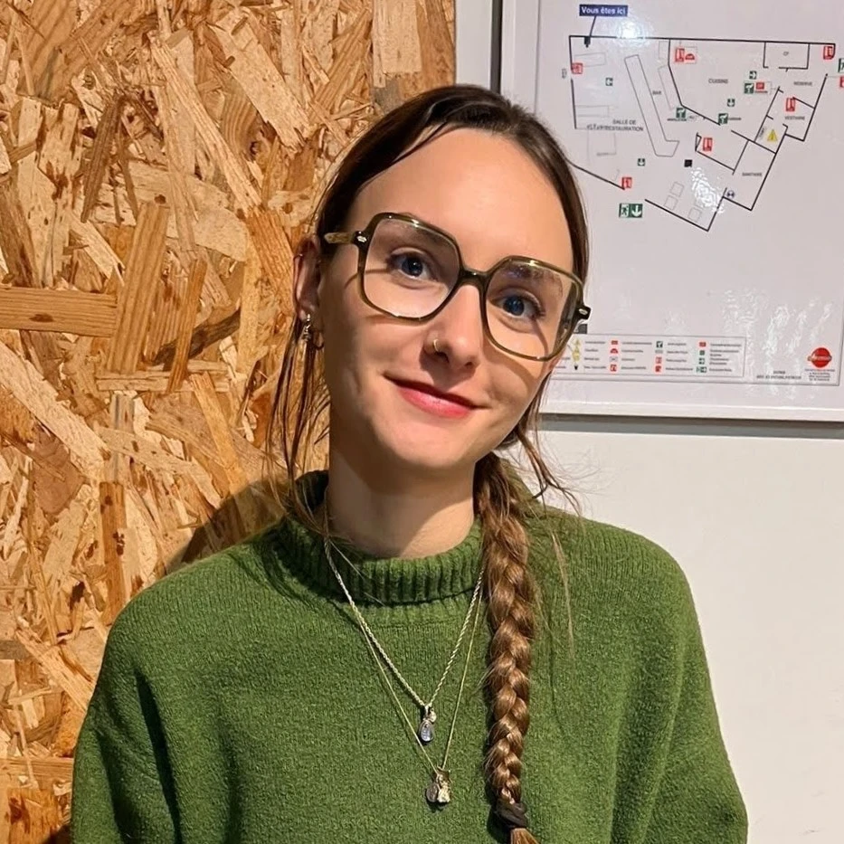

Portfolio — 2026
Juliette Mouillac — UX/UI Designer
En recherche de poste à partir de Septembre 2026 !
Projets
Scrappy
Développement complet d'une application web de partage de balades.

Esport Olympique
Et si l'Esport était une discipline olympique ?

La La Langues
Site web pour un organisme de formation en langues à Bordeaux.

The Mandalorian
Mon premier projet HTML/CSS — site fan de la série Star Wars.

Présentation développeur web
Support HTML/CSS sur le métier de développeur web.

Bloom & Brew
Identité visuelle pour une marque de café bio fictive.

Landing page Roxy
Landing page fictive pour une nouvelle collection de la marque Roxy.

À Propos
Étudiante en master Web éditorial et stratégie UX, je m'intéresse à la conception d'expériences numériques accessibles, utiles et adaptées aux besoins des utilisateurs.
Mon intérêt pour le numérique s'accompagne d'une curiosité plus large pour les domaines créatifs. Le design, les arts, l'architecture et les jeux vidéo constituent autant de sources d'inspiration qui nourrissent ma pratique de l'UX et de l'UI design.
À travers mes projets, je cherche à concilier analyse des besoins, accessibilité et qualité de l'expérience utilisateur afin de concevoir des interfaces à la fois fonctionnelles et agréables à utiliser.

Compétences et outils